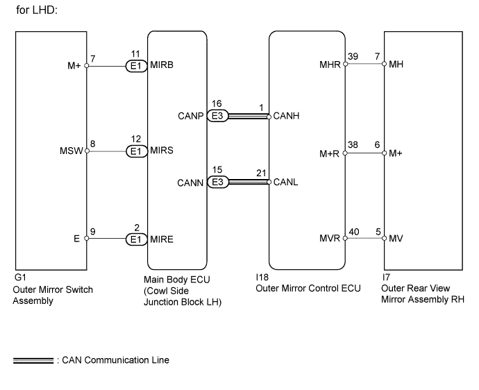
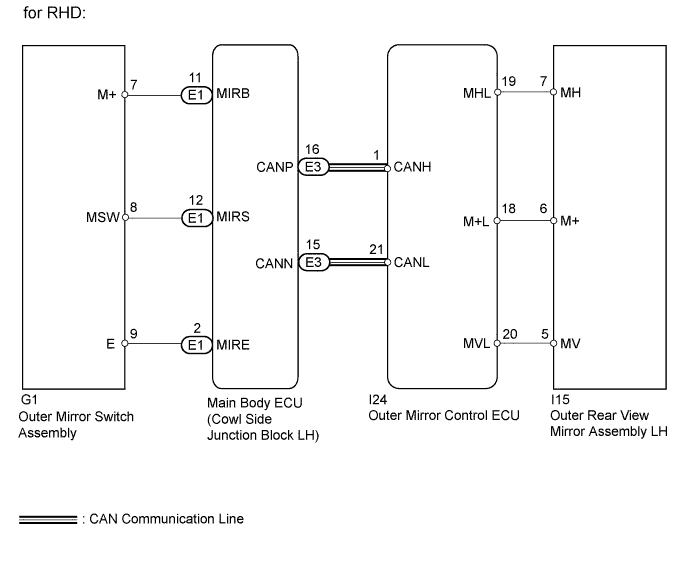
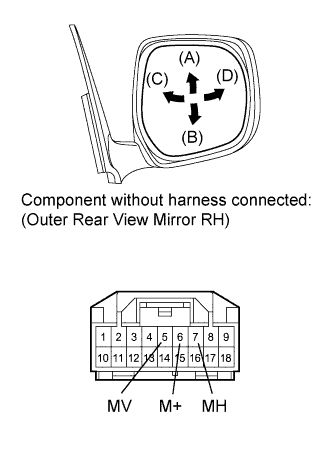
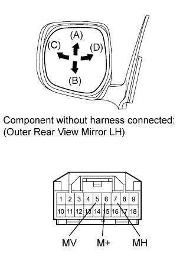
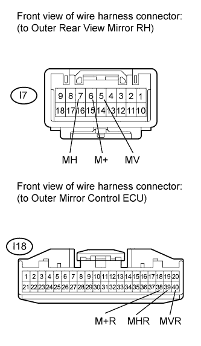
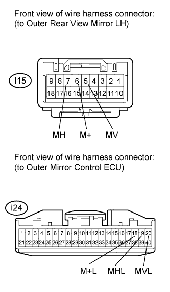
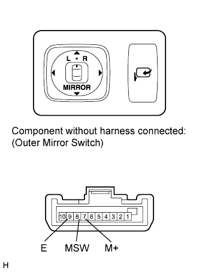
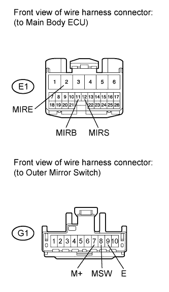

POWER MIRROR CONTROL SYSTEM (w/ Retract Mirror) > Front Passenger Side Power Mirror cannot be Adjusted with Power Mirror Switch |


| 1.CHECK DTC |
Use the intelligent tester to check if the CAN communication system is functioning normally .
| Result | Proceed to |
| CAN DTC is not output | A |
| CAN DTC is output (for LHD) | B |
| CAN DTC is output (for RHD) | C |
|
| ||||
|
| ||||
| A | |
| 2.READ VALUE USING INTELLIGENT TESTER (OUTER MIRROR SWITCH) |
Check the Data List for proper functioning of the outer mirror switch (Click here).
| Tester Display | Measurement Item/Range | Normal Condition | Diagnostic Note |
| Mirror Selection SW (R) | Mirror master switch signal for RH mirror / ON or OFF | ON: Switch is in R position OFF: Switch is off or in L position | - |
| Mirror Selection SW (L) | Mirror master switch signal for LH mirror / ON or OFF | ON: Switch is in L position OFF: Switch is off or in R position | - |
| Mirror Position SW (R) | Mirror control switch signal (right) / ON or OFF | ON: Right switch is on OFF: Any switch except right is on or all switches are off | - |
| Mirror Position SW (L) | Mirror control switch signal (left) / ON or OFF | ON: Left switch is on OFF: Any switch except left is on or all switches are off | - |
| Mirror Position SW (Up) | Mirror control switch signal (up) / ON or OFF | ON: Up switch is on OFF: Any switch except up is on or all switches are off | - |
| Mirror Position SW (Dwn) | Mirror control switch signal (down) / ON or OFF | ON: Down switch is on OFF: Any switch except down is on or all switches are off | - |
|
| ||||
| OK | |
| 3.PERFORM ACTIVE TEST USING INTELLIGENT TESTER (POWER MIRROR CONTROL FUNCTION) |
Select the Active Test, use the intelligent tester to generate a control command, and then check the power mirror control function (Click here).
| Tester Display | Test Part | Control Range | Diagnostic Note |
| RH Mirror Up/Down | Mirror vertical operation | UP / OFF / DOWN | - |
| RH Mirror Right/Left | Mirror horizontal operation | RIGHT / OFF / LEFT | - |
| LH Mirror Up/Down | Mirror vertical operation | UP / OFF / DOWN | - |
| LH Mirror Right/Left | Mirror horizontal operation | RIGHT / OFF / LEFT | - |
| Result | Proceed to |
| Outer rear view mirror (for Passenger Side) does not operate normally | A |
| Outer rear view mirror (for Passenger Side) operates normally | B |
|
| ||||
| A | |
| 4.INSPECT OUTER REAR VIEW MIRROR ASSEMBLY (for Passenger Side) |
 |
for LHD:
Remove the mirror RH (Click here).
Apply battery voltage and check the operation of the power mirror.
| Measurement Condition | Specified Condition |
| Battery positive (+) → Terminal 5 (MV) Battery negative (-) → Terminal 6 (M+) | Turns upward (A) |
| Battery negative (-) → Terminal 5 (MV) Battery positive (+) → Terminal 6 (M+) | Turns downward (B) |
| Battery positive (+) → Terminal 7 (MH) Battery negative (-) → Terminal 6 (M+) | Turns left (C) |
| Battery negative (-) → Terminal 7 (MH) Battery positive (+) → Terminal 6 (M+) | Turns right (D) |
 |
for RHD:
Remove the mirror RH (Click here).
Apply battery voltage and check the operation of the power mirror.
| Measurement Condition | Specified Condition |
| Battery positive (+) → Terminal 5 (MV) Battery negative (-) → Terminal 6 (M+) | Turns upward (A) |
| Battery negative (-) → Terminal 5 (MV) Battery positive (+) → Terminal 6 (M+) | Turns downward (B) |
| Battery positive (+) → Terminal 7 (MH) Battery negative (-) → Terminal 6 (M+) | Turns left (C) |
| Battery negative (-) → Terminal 7 (MH) Battery positive (+) → Terminal 6 (M+) | Turns right (D) |
|
| ||||
| OK | |
| 5.CHECK HARNESS AND CONNECTOR (OUTER REAR VIEW MIRROR ASSEMBLY - OUTER MIRROR CONTROL ECU) |
 |
for LHD:
Disconnect the I18 ECU connector.
Disconnect the I7 mirror connector.
Measure the resistance according to the value(s) in the table below.
| Tester Connection | Condition | Specified Condition |
| I18-38 (M+R) - I7-6 (M+) | Always | Below 1 Ω |
| I18-39 (MHR) - I7-7 (MH) | ||
| I18-40 (MVR) - I7-5 (MV) | ||
| I7-6 (M+) - Body ground | Always | 10 kΩ or higher |
| I7-7 (MH) - Body ground | ||
| I7-5 (MV) - Body ground |
 |
for RHD:
Disconnect the I24 ECU connector.
Disconnect the I15 mirror connector.
Measure the resistance according to the value(s) in the table below.
| Tester Connection | Condition | Specified Condition |
| I24-18 (M+L) - I15-6 (M+) | Always | Below 1 Ω |
| I24-19 (MHL) - I15-7 (MH) | ||
| I24-20 (MVL) - I15-5 (MV) | ||
| I15-6 (M+) - Body ground | Always | 10 kΩ or higher |
| I15-7 (MH) - Body ground | ||
| I15-5 (MV) - Body ground |
|
| ||||
| OK | ||
| ||
| 6.INSPECT OUTER MIRROR SWITCH ASSEMBLY |
 |
Remove the switch (Click here).
Measure the resistance according to the value(s) in the table below.
| Tester Connection | Switch Condition | Specified Condition |
| 7 (M+) - 9 (E) | Up switch pushed | 95 to 105 Ω |
| Down switch pushed | 446 to 493 Ω | |
| Left switch pushed | 760 to 840 Ω | |
| Right switch pushed | 237 to 262 Ω | |
| No switches pushed | 10 kΩ or higher | |
| 8 (MSW) - 9 (E) | Mirror master switch R | Below 1 Ω |
| Mirror master switch L | 95 to 105 Ω | |
| Mirror master switch off | 10 kΩ or higher |
|
| ||||
| OK | |
| 7.CHECK HARNESS AND CONNECTOR (OUTER MIRROR SWITCH - MAIN BODY ECU) |
 |
Disconnect the E1 ECU connector.
Disconnect the G1 switch connector.
Measure the resistance according to the value(s) in the table below.
| Tester Connection | Condition | Specified Condition |
| E1-2 (MIRE) - G1-9 (E) | Always | Below 1 Ω |
| E1-11 (MIRB) -G1-7 (M+) | ||
| E1-12 (MIRS) - G1-8 (MSW) | ||
| G1-9 (E) - Body ground | Always | 10 kΩ or higher |
| G1-7 (M+) - Body ground | ||
| G1-8 (MSW) - Body ground |
|
| ||||
| OK | ||
| ||